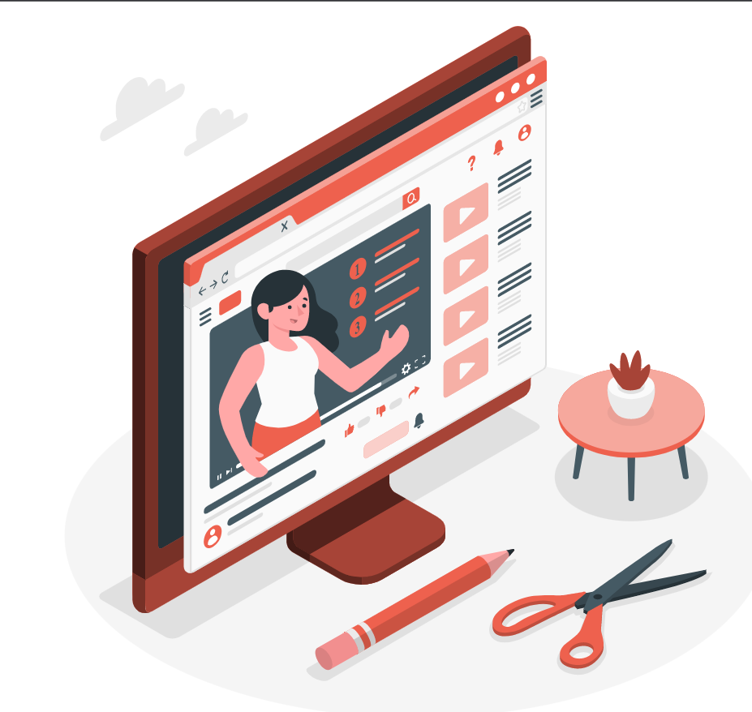

Get To Know Us Better |
|
|---|---|
| Sambutan | |
Kepala Sekolah |
|
|
Selamat datang di website SMK Telkom Malang yang saya tujukan untuk seluruh unsur pimpinan, guru, karyawan dan siswa serta khalayak umum guna dapat mengakses seluruh informasi tentang sekolah kami. Tentunya dalam penyajian informasi masih banyak kekurangan, oleh karena itu kepada seluruh civitas akademika dan masyarakat umum dapat memberikan saran dan kritik demi kemajuan lebih lanjut. Saya berharap Website ini dapat dijadikan wahana interaksi yang positif baik antar civitas akademika maupun masyarakat pada umumnya, sehingga dapat menjalin silaturahmi yang erat disegala unsur. Mari kita bekerja dan berkarya dengan mengharap ridho sang Kuasa dan keikhlasan yang tulus demi anak bangsa. - Rahmat Dwi Djatmiko, S.Kom. |
| kuy, nonton! |  | Video Profil Moklet |
|---|---|
|
Video profil sekolah memperkenalkan kepada kalian hal-hal berkaitan dengan lingkungan sekolah, fasilitas umum sekolah, fasilitas pembelajaran, ruang belajar, kegiatan siswa dan masih banyak lagi. Biar kalian tidak penasaran apa saja yang ada di dalam SMK Telkom Malang, segera tonton video profilnya. |
|
SISWA KAMI LEBIH DARI 1000+ |
||||
|---|---|---|---|---|
|
Mayoritas siswa kami tidak hanya dari Malang, namun juga dari berbagai daerah. Semuanya berkesempatan bergabung dengan kami. |
||||
| 1130 RPL |
982 Laki-Laki |
|||
| 416 TKJ |
559 Perempuan |
|||
Program Keahlian |
||
|---|---|---|
|
SMK Telkom Malang memiliki dua program keahlian yang bisa kalian pilih. Kedua program
keahlian ini saling berkaitan satu sama lain. Sehingga dengan dukungan guru-guru kami yang keren nantinya kalian bisa mempelajari keduanya. |
 |
Rekayasa Perangkat lunak |
| Rekayasa perangkat lunak |